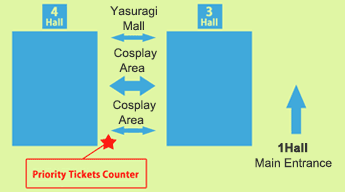

일반 공개일에는 코스프레 기획을 실시
도쿄 게임쇼 2012에서는 일반공개일에 '야스라기노 몰'(3홀과 4홀의 사이)의 일부 및 행사장 밖 남쪽(바다쪽) 일부에 코스프레 공간이 마련됩니다.
또한 9월 22일(토) 18시 30분부터 8홀 이벤트 무대에서 'Cosplay Collection Night @TGS'(주최 Cure)가 개최됩니다. 코스프레 참가자 여러분의 많은 참여를 부탁 드립니다.
Cosplay Collection Night @TGS presented by Cure

개최 개요
| 일시 | 9월 22일(토) 18:30~20:00 |
|---|---|
| 장소 | 마쿠하리메세 8홀 이벤트 무대 |
| 출연진 | 코스프레 플레이어: KANAME☆, 레이카, YUIMINO, Onnies(태국), Heyleydia(태국), 팀 시콘, 코스파포 외 약 200명
프로듀서: 이누이 타쓰미(Cure) MC: 아야카와 윤마오 DJ＆MC: WAN(코스프레 헤븐/오타리듬(OTA-RHYTHM)/핫퍄쿠만키칸) VJ: 후카자와 토시키(RawLight / HighLIKE) |
| 주최 | Cure(NHN Japan주식회사)http://curecos.com/ |
참가방법
‘Cosplay Collection Night’에 참가하시기 위해서는 정리권이 필요합니다. 정리권은 9월 22일(토)에 ‘야스라기노 몰’ (마쿠하리메세 3홀과 4홀의 사이)의 ‘코스프레 공간’에서 배포합니다.

※ 준비된 정리권 수량을 초과할 경우 배포가 종료됩니다.
※ 코스프레 플레이어뿐만 아니라 누구나 참가하실 수 있습니다.
※ 16시 이후에는 도쿄 게임쇼 2012에 입장하실 수 없습니다. 참가를 희망하시는 분은 반드시 16시까지 도쿄 게임쇼 2012에 입장하시기 바랍니다.
이벤트 무대 입장절차
17:00에 전시가 종료되면 7홀 ‘음식코너’ 근처의 집합장소에 모여주시기 바랍니다. 18시경에 직원의 안내에 따라 8홀의 이벤트 무대에 입장합니다.
※ 입장 시 정리권을 확인하므로 반드시 정리권을 지참하시기 바랍니다.
※ Cosplay Collection Night 참가자 분들에 한해서 7홀의 코스프레 탈의실을 이용하실 수 있습니다. 이용시간은 22일 21시까지입니다.
※ 귀중품은 반드시 휴대하시고 각자 관리하시기 바랍니다.
※ 행사장 내에서의 귀중품 및 반입물품의 도난 및 파손 등에 대해서 주최자는 일체 책임을 지지 않습니다.
코스프레 참가자께 드리는 부탁말씀(부탁말씀과 주의사항)
자세한 사항은［코스프레 참가자께 드리는 부탁말씀］]을 확인하시기 바랍니다.